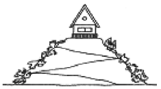
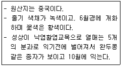
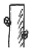
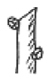
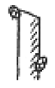
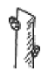
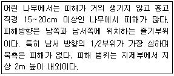

조경기능사 (2011-04-17 기출문제)
1과목: 조경일반
1. 정원양식의 발생요인 중 자연환경 요인이 아닌 것은?
- 기후
- 지형
- 식물
- 종교
(정답률: 96%)

2. 다음 그림과 같이 구릉지의 맨 위쪽에 세워진 건물은 토지의 이용방법 중 어떠한 것에 속하는가?

- 강조
- 통일
- 대비
- 보존
(정답률: 92%)
3. 녹지계통의 형태가 아닌 것은?
- 분산형(산재형)
- 환상형
- 입체분리형
- 방사형
(정답률: 76%)
4. 회교문화의 영향을 입어 독특한 정원 양식을 보이는 곳은?
- 이탈리아정원
- 프랑스정원
- 영국정원
- 스페인정원
(정답률: 89%)
5. 우리나라 최초의 국립공원은?
- 설악산
- 한라산
- 지리산
- 내장산
(정답률: 90%)
6. 부귀나 영화를 등지고 자연과 벗하며 농경하고 살기 위해 세운 주거를 별서(別墅)정원이라 한다. 우리나라의 현존하는 대표적인 것은?
- 윤선도의 부용동 원림
- 강릉의 선교장
- 이덕유의 평천산장
- 구례의 운조루
(정답률: 86%)
7. 등고선 간격이 20m인 1/25000 지도의 지도상 인접한 등고선에 직각인 평면 거리가 2cm인 두 지점의 경사도는?
- 2%
- 4%
- 5%
- 10%
(정답률: 56%)
8. 동양정원에서 연못을 파고 그 가운데 섬을 만드는 수법에 가장 큰 영향을 준 것은?
- 자연지형
- 기상요인
- 신선사상
- 생활양식
(정답률: 93%)
9. 일본의 모모야마(桃山)시대에 새롭게 만들어져 발달한 정원 양식은?
- 회유임천식
- 축산고산수식
- 홍교수범
- 다정
(정답률: 72%)
10. 전통민가 조경이 프로젝트의 대상이 되는 분야는?
- 기타시설
- 주거지
- 공원
- 문화재
(정답률: 78%)
11. 설계자의 의도를 개략적인 형태로 나타낸 일종의 시각언어로서 도면을 단순화시켜 상징적으로 표현한 그림을 의미하는 것은?
- 상세도
- 다이어그램
- 조감도
- 평면도
(정답률: 77%)
12. 자연공원법상 자연공원이 아닌 것은?
- 국립공원
- 도립공원
- 군립공원
- 생태공원
(정답률: 81%)
13. 다음 중 수문(水文)계획에서 고려하여야 할 것은?
- 집수구역
- 식생분포
- 야생동물
- 식생구조
(정답률: 78%)
14. 옥상조경 토양경량재가 아닌 것은?
- 펄라이트
- 버미클라이트
- 피트모스
- 마사토
(정답률: 86%)
15. 고대 그리스 조경에 관한 설명 중 틀린 것은?
- 구릉이 많은 지형에 영향을 받았다.
- 짐나지움(Gymnasium)과 같은 공공적인 정원이 발달하였다.
- 히포다무스에 의해 도시계획에서 격자형이 채택되었다.
- 서인들의 정원은 발달을 보지 못했으나 왕이나 귀족의 저택은 대규모이며 사치스러운 정원을 가졌다.
(정답률: 59%)
2과목: 조경재료
16. 다음 중 수종의 특징상 관상 부위가 주로 줄기인 것은?
- 자작나무
- 자귀나무
- 수양버들
- 위성류
(정답률: 71%)
17. 석재의 특성 중 장점에 해당되지 않는 것은?
- 불연성이며, 압축강도가 크고 내구성ㆍ내화학성이 풍부하며 마모성이 적다.
- 종류가 다양하고 같은 종류의 석재라도 산지나 조직에 따라 여러 외과과 색조가 나타난다.
- 외관이 장중하고 치밀하여 가공시 아름다운 광택을 낸다.
- 화열에 닿으면 화강암 등은 균열이 생기고, 석회암이나 대리석과 같이 분해가 일어나기도 한다.
(정답률: 76%)
18. 콘크리트의 배합 방법 중에서 1:2:4, 1:3:6과 같은 형태의 배합 방법으로 가장 적합한 것은?
- 용적배합
- 중량배합
- 복식배합
- 표준계량배합
(정답률: 77%)
19. 다음 중 수목의 맹아성이 가장 약한 것은?
- 비자나무
- 능수버들
- 회양목
- 쥐똥나무
(정답률: 69%)
20. 다음 화초 중 재배 특성에 따른 분류 중 알뿌리 화초에 해당하는 것은?
- 크로커스
- 맨드라미
- 과꽃
- 백일홍
(정답률: 75%)
21. 표준형 벽돌을 사용하여 줄눈 10mm로 시공할 때 2.0 B벽돌벽의 두께는? (단, 공간쌓기는 아니다. )
- 210mm
- 390mm
- 320mm
- 430mm
(정답률: 69%)
22. 다음 보기에서 설명하는 수종은?

- 태산목
- 황매화
- 벽오동
- 노각나무
(정답률: 69%)
23. 다음 중 열경화성(축합형)수지인 것은?
- 폴리에틸렌수지
- 폴리염화비닐수지
- 아크릴수지
- 멜라민수지
(정답률: 58%)
24. 다음 중 성형가공이 자유롭지만 온도의 변화에 약한 제품은?
- 콘크리트 제품
- 플라스틱 제품
- 금속 제품
- 목질 제품
(정답률: 92%)
25. 다음 중 내염성에 대해 가장 약한 수종은?
- 아왜나무
- 곰솔
- 일본목련
- 모감주나무
(정답률: 66%)
26. 다음 중 목재에 관한 설명으로 틀린 것은?
- 단열성이 크다.
- 가공성이 좋다.
- 소리, 전기 등의 전도성이 크다.
- 건조가 불충분한 것은 썩기 쉽다.
(정답률: 85%)
27. 다음 중 일반적으로 자동차 매연에 대한 저항성이 가장 강한 수종은?
- 은행나무
- 소나무
- 목련
- 단풍나무
(정답률: 90%)
28. 다음 중 상록수로만 짝지어진 것은?
- 섬잣나무, 리기다소나무, 동백나무, 낙엽송
- 소나무, 배롱나무, 은행나무, 사철나무
- 철쭉, 주목, 모과나무, 장미
- 사철나무, 아왜나무, 회양목, 독일가문비나무
(정답률: 78%)
29. 일반적으로 건설재료로 사용하는 목재의 비중이란 다음 중 어떤 상태의 것을 말하는가? (단, 함수율이 약 15% 정도 일 때를 의미한다. )
- 포수비중
- 절대비중
- 진비중
- 기건비중
(정답률: 88%)
30. 시멘트를 만드는 과정에서 일정량의 석고를 첨가하는 목적은?
- 응결시간 조절
- 수밀성 증대
- 경화촉진
- 초기강도 증진
(정답률: 70%)
31. 다음 중 합판의 특징 설명으로 틀린 것은?
- 동일한 원재로부터 많은 정목판과 나무결 무늬판이 제조된다.
- 내구성, 내습성이 작다.
- 폭이 넓은 판을 얻을 수 있다.
- 팽창, 수축 등으로 생기는 변형이 거의 없다.
(정답률: 69%)
32. 다음 중 수목의 분류상 교목으로 분류할 수 없는 것은?
- 일본목련
- 느티나무
- 목련
- 병꽃나무
(정답률: 83%)
33. 목재를 방부 처리하고자 할 때 주로 사용되는 방부제는?
- 알코올
- 크레오소트유
- 광명단
- 니스
(정답률: 82%)
34. 석회암이 변화되어 결정화한 것으로 석질이 치밀하고 견고할 뿐 아니라 외관이 미려하여 실내장식재 또는 조각재로 사용되는 것은?
- 응회암
- 사문암
- 대리석
- 정판암
(정답률: 85%)
35. 다음 중 식재시 수목의 규격 표기 방법이 다른 것은?
- 은행나무
- 메타세콰이아
- 잣나무
- 벚나무
(정답률: 37%)
3과목: 조경 시공 및 관리
36. 다음 중 콘크리트 소재의 미끄럼대를 시공할 경우 일반적으로 지표면과 미끄럼판의 활강 부분이 수평면과 이루는 각도로 가장 적합한 것은?
- 70˚
- 55˚
- 35˚
- 15˚
(정답률: 83%)
37. 다음 중 설계도면을 작성할 때 치수선, 치수보조선에 이용되는 선의 종류는?
- 1점 쇄선
- 2점 쇄선
- 파선
- 실선
(정답률: 79%)
38. 다음 중 잔디에 가장 많이 발생하는 병과 그에 따른 방제법이 맞는 것은?
- 녹병(綠炳) : 헥사코나졸수화제(5%) 살포
- 엽진병 : 다이아지논유제 살포
- 흰가루병 : 디코폴수화제(5%) 살포
- 근부병 : 다이아지논분제 살포
(정답률: 75%)
39. 시멘트 500포대를 저장할 수 있는 가설창고의 최소 필요 면적은? (단, 쌓기 단수는 최대 13단으로 한다. )
- 15.4m2
- 16.5m2
- 18.5m2
- 20.4m2
(정답률: 50%)
40. 다음 그림 중 수목의 가지에서 마디 위 다듬기의 요령으로 가장 좋은 것은?




(정답률: 87%)
41. 다음 중 호박돌 쌓기의 방법 설명으로 부적합한 것은?
- 표면이 깨끗한 돌을 사용한다.
- 크기가 비슷한 것이 좋다.
- 불규칙하게 쌓는 것이 좋다.
- 기초공사 후 찰쌓기로 시공한다.
(정답률: 71%)
42. 다음 중 뿌리분의 형태를 조개분으로 굴취하는 수종으로 만 나열된 것은?
- 소나무, 느티나무
- 버드나무, 가문비나무
- 눈주목, 편백
- 사철나무, 사시나무
(정답률: 71%)
43. 다음 중 건설 기계의 용도 분류상 굴착용으로 사용하기에 부적합한 것은?
- 클램쉘
- 파워쇼벨
- 드래그라인
- 스크레이퍼
(정답률: 61%)
44. 큰 돌을 운반하거나 앉힐 때 주로 쓰이는 기구는?
- 예불기
- 스크레이퍼
- 체인블록
- 롤러
(정답률: 88%)
45. 철재(鐵材)로 만든 놀이시설에 녹이 슬어 다시 페인트칠을 하려 한다. 그 작업 순서로 옳은 것은?
- 녹닦기(샌드페이퍼 등) → 연단(광명단) 칠하기 → 에나멜 페인트 칠하기
- 에나멜 페인트 칠하기 → 녹닦기(샌드페이퍼 등) → 연단(광명단) 칠하기
- 에나멜 페인트 칠하기 → 녹닦기(샌드페이퍼 등) → 바니쉬 칠하기
- 에나멜 페인트 칠하기 → 바니쉬 칠하기 → 녹닦이(샌드페이퍼 등)
(정답률: 92%)
46. 다음 중 소나무 혹병의 중간 기주는?
- 송이풀
- 배나무
- 참나무류
- 향나무
(정답률: 60%)
47. 살수기 설계시 배치 간격은 바람이 없을 때를 기준으로 살수 작동 최대간격을 살수직경의 몇 %로 제한하는가?
- 45 ~ 55%
- 60 ~ 65%
- 70 ~ 75%
- 80 ~ 85%
(정답률: 72%)
48. 항공사진 측량시 낙엽수와 침엽수, 토양의 습윤도 등의 판독에 쓰이는 요소는?
- 질감
- 음영
- 색조
- 모양
(정답률: 63%)
49. 성인이 이용할 정원의 디딤돌 놓기 방법으로 틀린 것은?
- 납작하면서도 가운데가 약간 두둑하여 빗물이 고이지 않는 것이 좋다.
- 디딤돌의 간격은 보행폭을 기준하여 35 ~ 50cm 정도가 좋다.
- 디딤돌은 가급적 사각형에 가까운 것이 자연미가 있어 좋다.
- 디딤돌 및 징검돌의 장축은 진행방향에 직각이 되도록 배치한다.
(정답률: 75%)
50. 조경 수목의 관리계획에는 정기 관리작업, 부정기 관리작업, 임시 관리작업으로 분류할 수 있다. 그 중 정기 관리작업에 속하는 것은?
- 고사목 제거
- 토양 개량
- 세척
- 거름주기
(정답률: 79%)
51. 설계안이 완공되었을 경우를 가정하여 설계 내용을 실제 눈에 보이는 대로 절단한 면에서 먼 곳에 있는 것은 작게, 가까이 있는 것은 크고 깊이가 있게 하나의 화면에 그리는 것은?
- 평면도
- 조감도
- 투시도
- 상세도
(정답률: 67%)
52. 다음 중 굵은 가지를 진정하였을 때 다른 수종들 보다 전정부위에 반드시 도포제를 발라주어야 하는 것은?
- 잣나무
- 메타세콰이어
- 느티나무
- 자목련
(정답률: 61%)
53. 다음 단계 중 시방서 및 공사비 내역서 등을 주로 포함하고 있는 것은?
- 기본구상
- 기본계획
- 기본설계
- 실시설계
(정답률: 64%)
54. 비탈면 경사의 표시에서 1:2.5에서 2.5는 무엇을 뜻하는가?
- 수직고
- 수평거리
- 경사면의 길이
- 안식각
(정답률: 75%)
55. 일반적으로 식재할 구동이 파기를 할 때 뿌리분 크기의 몇 배 이상으로 구덩이를 파고 해로운 물질을 제거해야하는가?
- 1.5
- 2.5
- 3.5
- 4.5
(정답률: 59%)
56. 다음 보기에서 설명하는 기상 피해는?

- 볕데기(皮燒)
- 한해(寒海)
- 풍해(風害)
- 설해(雪害)
(정답률: 65%)
57. 진딧물, 깍지벌레와 관계가 가장 깊은 병은?
- 흰가루병
- 빗자루병
- 줄기마름병
- 그을음병
(정답률: 79%)
58. 다음 중 전정의 효과로 적합하지 않은 것은?
- 수목의 생장을 촉진시킨다.
- 수관 내부의 일조 부족에 의한 허약한 가지와 병충해 발생의 원인을 제거한다.
- 도장지의 처리로 생육을 고르게 한다.
- 화목류의 적절한 전정은 개화, 결실을 촉진시킨다.
(정답률: 53%)
59. 다수진 25% 유제 100cc를 0.⑤%로 희석하려 할 때 필요한 물의 양은?
- 5L
- 25L
- 50L
- 100L
(정답률: 65%)
60. 도급업자 입장에서 지급받을 수 있는 공사비 중 통상적으로 90% 까지 지불받을 수 있는 공사비의 명칭은?
- 착공금(전도금)
- 준공금(완공불)
- 하자보증금
- 중간불(기성불)
(정답률: 60%)